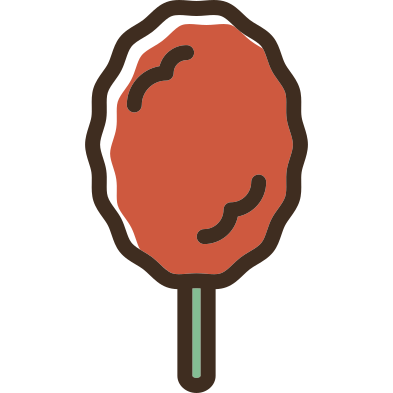

Competitors in this field include both the widely known Purdy's and Lindt chocolatiers. Both companies have the advantage of being established and well-branded. The chocolatiers have regulars who are loyal to their services. However, their marketing strategies are not very interactive with the public. Parrot chocolatiers plans on being more present in the public's lives through ads.
Our logo is effective yet simple. We stuck to the colours provided by the company. The parrot was essential but colourful and it was difficult to factor in chocolate with the vibrancy of the parrot. To compensate for this, we included the brown to remind us of the milk chocolate that our company creates.
I used my own parrot for inspiration by drawing on the colours of his wings. It was a great brand to develop because the whole parrot concept is very unique in the chocolate industry.
CASSANDRA FLOROFF